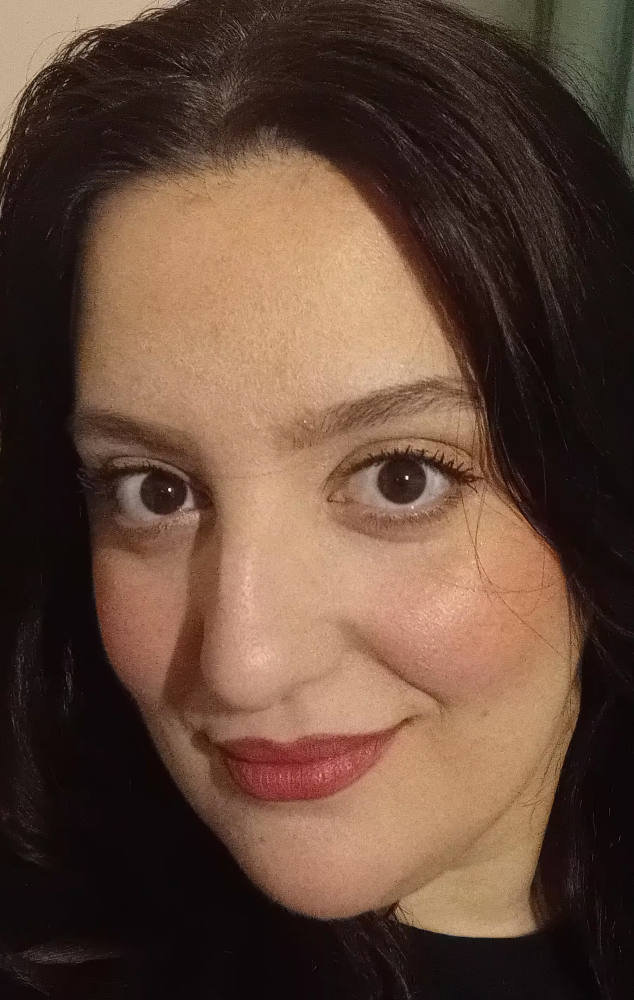

My name is Myrto Vergi and I am 29 years old. I am Greek and my place of birth is Kalamata. Kalamata is a quaint, small town, brushed by the Messinian Gulf situated in the Southwestern part of the Peloponnese.
In 2015 I sat for the Panhellenic Examinations, the Greek education system's equivalent of university entrance exams. I managed to pass and get in the University of the Peloponnese, more specifically the department of Greek Philology. This a link to the website of the University of the Peloponnese. There I specialised in Classical Studies and got the chance to explore and delve deeper into my academic interests, some of which are Attic drama, mainly tragedy, and lyrical poetry. I graduated in 2021.
One of my favourite ways to pass my free time is reading. I enjoy literature in general, however I have a soft spot for Greek poetry, especially for Nikos Kavvadias and Napoleon Lapathiotis. I also love to listen to music. I take pleasure in listening to both Greek and foreign artists. Some of my favourites include Vassilis Papakonstantinou, Muse and Depeche Mode.
Moreover, it would be an understatement to say that I like watching films and going to the cinema. I have always been quite fixated on the seventh art. The following is a short list of my favourite films:
| Prior Knowledge | My digital skills and knowledge are average in the general scope of things. I possess the typical abilities needed to operate a computer, so I imagine that in the scope of the "Book in the Digital Age" course I am considered a beginner. I am aware of the different types of formats that files can take, however my knowledge over more technical information is quite limited. |
| Expectations | During this course, I expect to deepen my understanding of the technicalities regarding the digital tools used in the publishing world. I would also like to augment my digital literacy and gain useful skills, that can be applied in a professional setting. |